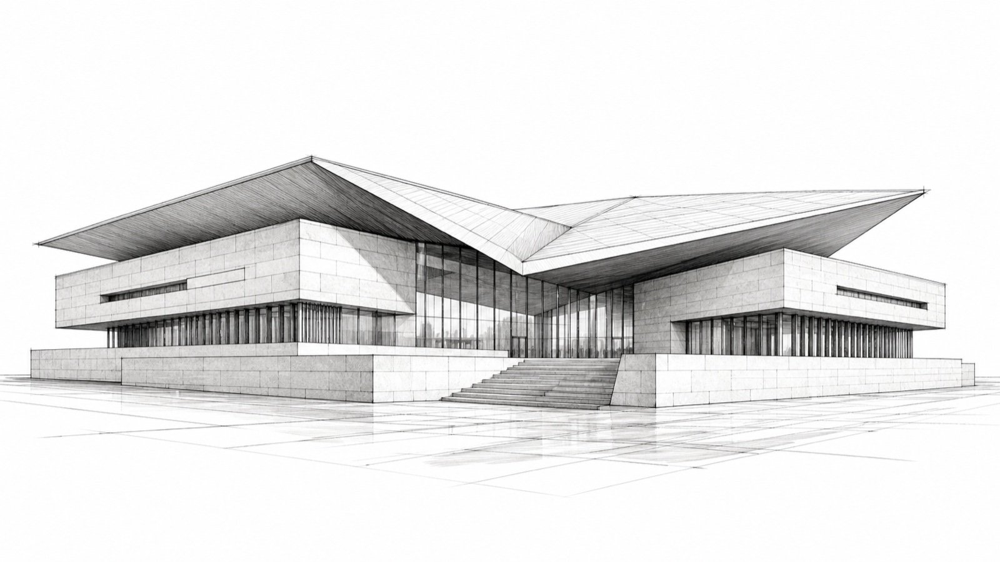

About
About
We are Grid — an architecture studio shaping civic, cultural and residential buildings around one idea: that a clear structural order is the most generous foundation for architecture.
Every project begins as a set of rules — a rhythm of columns, a module of stone, a line of sight. From that grid we build outward, letting structure, light and material settle into something quiet, durable and precise.
Founded in 2014, we are a small studio of architects and makers who work slowly and stay close to the work — from the first pencil sketch to the last detail on site.

Move to reveal
Concept → Built
Pleated Museum · Lisbon